Distribution Links Example
Injector Script
The following tutorial was developed by Matt Heller using the mdEditor File Injector script he developed, which can be used to do bulk edits on your mdEditor files. This demo specifically walks through how to add a Distribution Link. The injector script will look for a unique ScienceBase Identifier (SBID) that exists in the metadata and then build a URL for the Distribution / Online Option based on the SBID. The URL will be named “Product Web-page with Downloadable Files” and the Function selected will be “information.”
A recording of this demo is available for viewing at: https://mmancusa.webex.com/mmancusa/ldr.php?RCID=b1a81ed0c41871e76f205d7f2f507008
You will need:
- Access to some mdEditor files. Note: these must be mdEditor files, NOT the mdJSON files attached to the SB items.
- Python installed on your PC.
- If you have ArcGIS installed, there is a good chance Python is installed.
Steps
(1) Download script and other helpful files from GitHub.
- Go to https://github.com/mmheller/mdEditorFileInjector and download all the files.
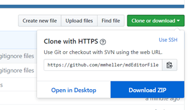
- Unzip to any folder.
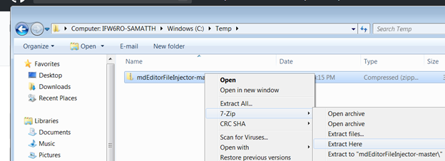
(2) Gather some mdEditor files for the demo test.
- Create a folder named Demo somewhere convenient.
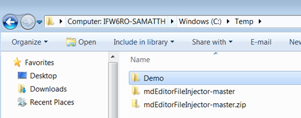
- Copy/paste 2-5 of YOUR mdEditor files into the Demo folder.
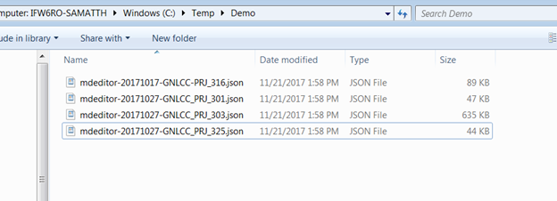
(3) Build the string that will have the necessary arguments to run the script.
- Open any text editor (e.g., notepad) and enter the following letters with Dashes on separate lines (–C –T –O)
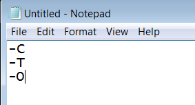
- Enter the path to the Demo folder in line –C. Note: all files and files in subfolders will be processed by the script. No original files will be edited, copies will always be made.
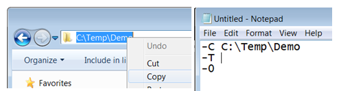
- Add False to the -T line. This indicates we’re not adding new contacts to the available contacts list.
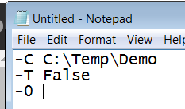
- Add 7 to the –O line. This specifies the option for the more complex find/replace
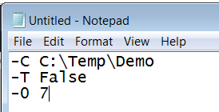
(4) Run the script.
- Back in the text editor, add two blank lines in the beginning.
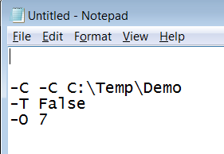
Find the path to your python.exe and enter in the 1st line. Example: C:.exe
Find the path to your .py injector script file and enter in the 2nd line. Note: this will be in the folder you downloaded and unzipped. Example: C:-master_v1.py
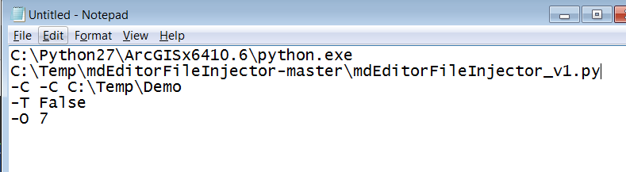
- Remove all the carriage returns and extra spaces, and save if desired. Note: if any of your file paths have spaces, make sure to enclose the full path/filename with double quotes.
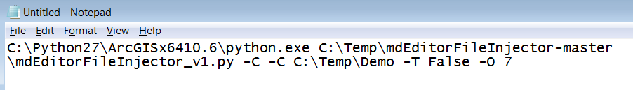
- Open a DOS prompt.
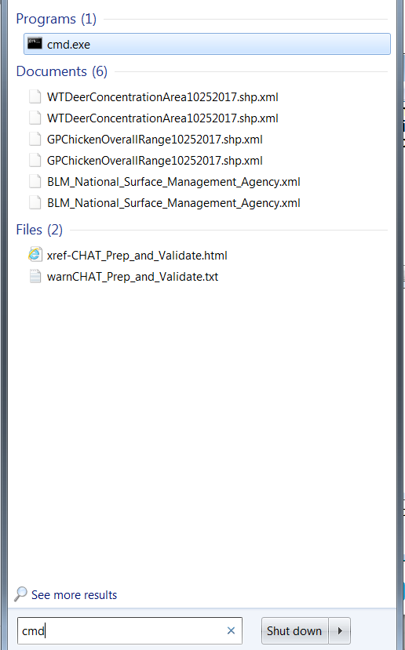
- Copy/paste the text from your text editor into the command prompt to run.
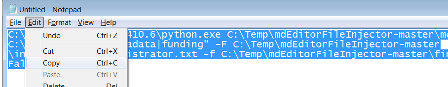
(5) Inspect the results.
Open mdEditor and clear the cache.
Click Import. Go to the demo folder and into the new folder created. Note: each time the process runs it will create a new folder and add new files to this folder.
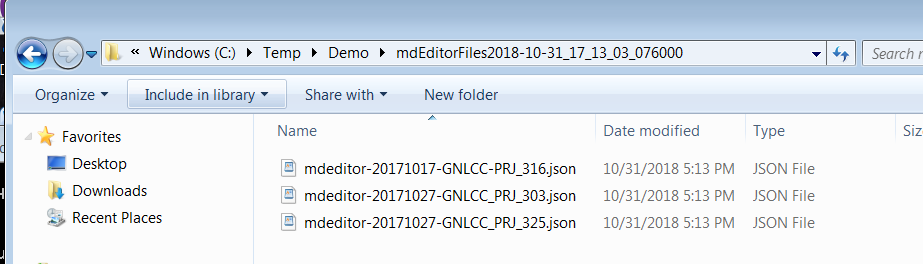
Select one of the new files to import.
Go to Distribution. Click Edit Distributors green button where the pointOfContact = LCC Network Data Steward.
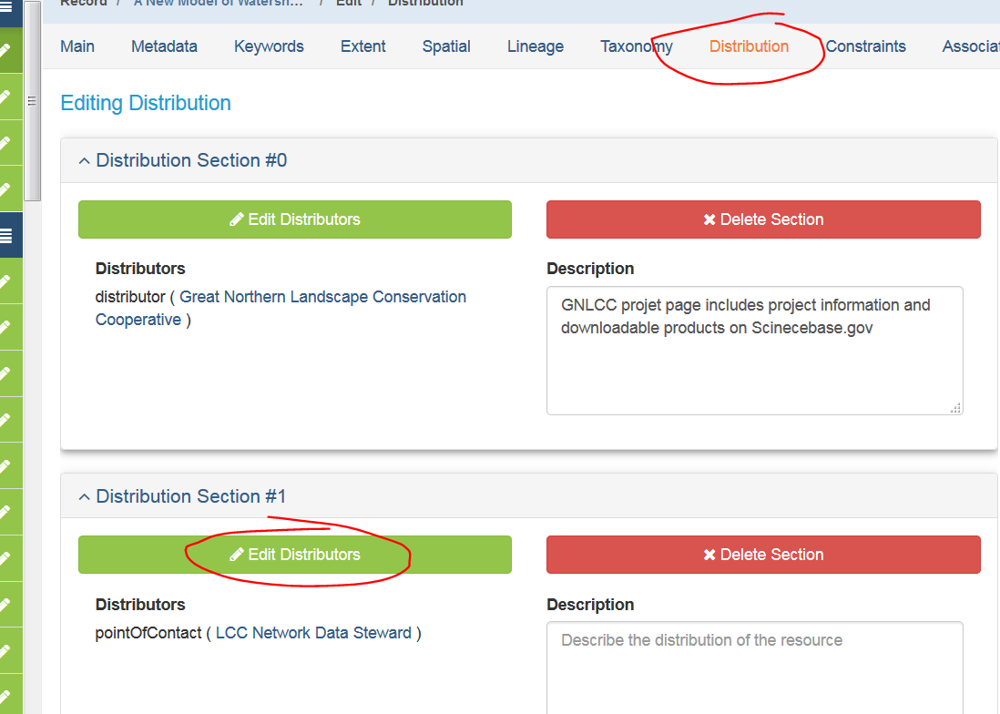
- Click Edit button in the Online Option section.
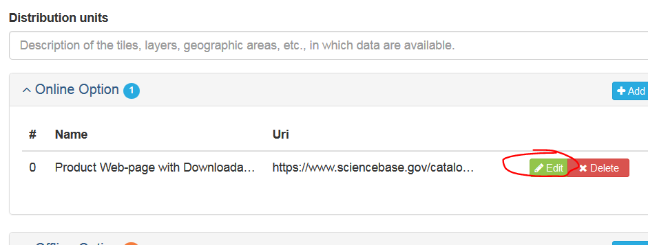
- Notice the injected fields. The Name of the online resource is “Product Web-Page with Downloadable Files” and the URL listed is the ScienceBase item link. The Function is “information” (since the link is not a direct download of the data).
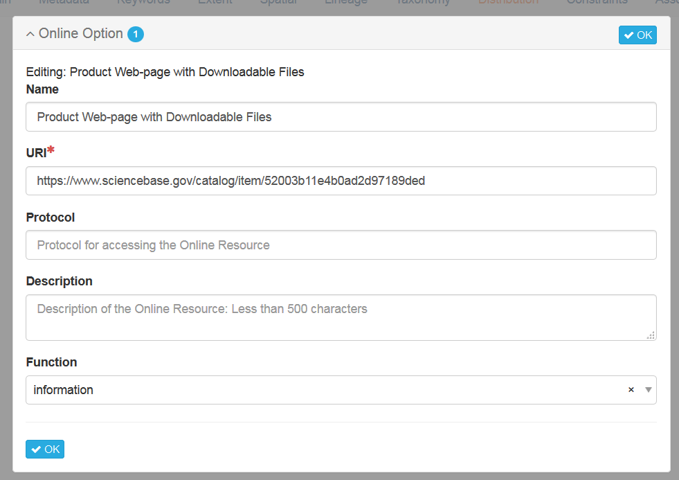
Note: If it errors out, there’s a problem. Verify the LCC Network Data Steward exists and the Contact ID matches edc6b779-3352-4a81-8430-76bcce1bfcb3